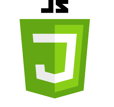

소개
-
약간의 완벽주의를 갖고 있어서 스스로 만족하지 못 하면 집요하고 끈질기게 답을 찾아 갑니다.
-
항상 사용자의 입장에서 생각하고 개발하려고 합니다.
-
튼튼한 멘탈을 소유해 쉽게 흔들리거나 무너지지 않습니다.
-
솔직한 대화를 선호하며 썩 괜찮은 인간관계를 가지고 있습니다.
-
적당한 자기관리로 준수한 체력을 보유하고 있습니다.
-
현재는 python과 django 위주로 공부하고 있지만 node.js에 관심을 가지고 있습니다.
-
배움을 즐기며 항상 정진하겠습니다.
기술 스택
| 기술 | 설명 | 평가 |
|---|---|---|
|
|
ORM을 통한 CRUD를 구현할 수 있고 MTV패턴에 익숙합니다. | |
| JAVA | 사용하지 않은지 오래되었지만 조금만 다시 본다면 CRUD를 무난하게 구현할 수 있습니다. | |
| JSP | 서블릿을 이용하여 서버측과 데이터를 원할하게 주고 받습니다. | |
|
|
대기업 프로젝트에서 .NET 데스크탑 소프트웨어를 개발한 경험이 있습니다. | |
|  Javascript | Node.js와 React를 공부하며 정진할 생각입니다. 웹 브라우저의 제어는 어느정도 할 수 있습니다. | |
|
|
알고리즘을 풀며 짧은 코드 길이에 반해서 공부했습니다. 알고리즘과 장고 외에 따로 사용한 적은 없습니다. | |
|
|
내장형 톰캣을 가지고 있고 쉽게 시작할 수 있다고 하여 jar로 배포만 해보았습니다. | |
|
|
상담 신청을 웹 메일로 보내는 간단한 페이지를 제작해봤습니다. | |
|
|
경력
| 회사명 | 담당업무 | 재직기간 |
|---|---|---|
| 바인시스템즈 | .net 데스크탑 소프트웨어 개발과 간단한 회사 페이지 개발 | 2018.11~2020.11 |
프로젝트
학력
| 학교명 | 전공 | 상태 | 재학 기간 |
|---|---|---|---|
| 서명초등학교 | 졸업 | 2001~2006 | |
| 동현중학교 | 졸업 | 2007~2009 | |
| 동래고등학교 | 이과 | 졸업 | 2010~2012 |
| 동의과학대 | 컴퓨터정보과 | 졸업 | 2013~2017 |
Contact
김택영
Email : xordud525@google.com
Phone : 010-2497-1008